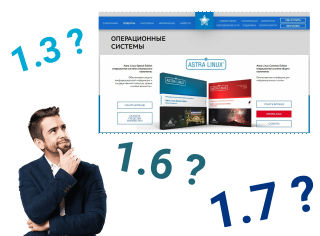
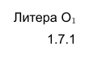

Разработчики Astra Linux в самом начале производства своих дистрибутивов решили упростить себе бумажную волокиту по прохождению сертификации очередных версий своей ОС. Их можно понять. Однако это решение вылилось в полную неразбериху с обозначением документации.
Проблема в том, что в документации на Astra Linux старательно обходится любая информация о том, для какой версии Astra Linux данная документация предназначена. Кроме того, обозначения документов от версии к версии Астры не меняется десятилетиями. И даже в именовании файлов документации не указывается номер версии дистрибутива. Это приводит к тому, что имея файл документации или его распечатанную копию, невозможно точно сказать, для какого дистрибутива данный кладезь информации предназначен.

Поэтому приходится ориентироваться по косвенным признакам. Ниже приведены сводные таблицы с характеристиками PDF-файлов и содержащейся в ней ключевой информации, на основе которых можно примерно (или даже точно) понять, к какому дистрибутиву относится документация. Эти таблицы составлены на основе файлов, входящих в комплект поставки Astra Linux SE версий 1.3, 1.6, 1.7.
Astra Linux SE 1.3
Наименование файла Размер Листов Год Обозначение Лит. Изм
Описание применения.pdf 165'586 31 2010 РУСБ.10015-01 31 01 - -
Руководство администратора.pdf 967'576 166 2010 РУСБ.10015-01 95 01 - -
Руководство по КСЗ ч1.pdf 550'436 94 2010 РУСБ.10015-01 97 01-1 - -
Руководство по КСЗ ч2.pdf 246'304 38 2010 РУСБ.10015-01 97 01-2 - -
Руководство пользователя.pdf 2'374'381 34 2010 РУСБ.10015-01 93 01 - -
Руководство по конструированию
прикладного ПО
для AstraLinuxSE.pdf 303'585 63 2011 - - -
Astra Linux SE 1.6
Наименование файла Размер Листов Год Обозначение Лит. Изм
Opisanie_primeneniya.pdf 165'036 41 2020 РУСБ.10015-01 31 01 О1 9 (РУСБ.20-20 23.07.20)
Ruk_admin_1.pdf 1'955'856 322 2020 РУСБ.10015-01 95 01-1 О1 6 (РУСБ.20-20 23.07.20)
Ruk_admin_2.pdf 176'954 29 2020 РУСБ.10015-01 95 01-2 О1 4 (РУСБ.08-20 18.02.20)
Ruk_KSZ_1.pdf 1'126'667 187 2020 РУСБ.10015-01 97 01-1 О1 9 (РУСБ.20-20 23.07.20)
Ruk_KSZ_2.pdf 201'641 55 2020 РУСБ.10015-01 97 01-2 О1 7 (РУСБ.08-20 18.02.20)
Ruk_user.pdf 1'301'256 60 2020 РУСБ.10015-01 93 01 О1 8 (РУСБ.20-20 23.07.20)
Ruk_postgres_wiki.pdf 2'677'906 660 2018 - - -
Astra Linux SE 1.7.0
Наименование файла Размер Листов Год Обозначение Лит. Изм
Opisanie_primeneniya.pdf 155'402 40 2021 РУСБ.10015-01 31 01 О1 11 (РУСБ.12-21 30.07.21)
Ruk_admin_1.pdf 1'818'600 364 2021 РУСБ.10015-01 95 01-1 О1 8 (РУСБ.12-21 30.07.21)
Ruk_admin_2.pdf 182'318 29 2021 РУСБ.10015-01 95 01-2 О1 6 (РУСБ.12-21 30.07.21)
Ruk_KSZ_1.pdf 923'113 220 2021 РУСБ.10015-01 97 01-1 О1 11 (РУСБ.12-21 30.07.21)
Ruk_KSZ_2.pdf 214'416 64 2021 РУСБ.10015-01 97 01-2 О1 8 (РУСБ.06-21 01.04.21)
Ruk_user.pdf 1'504'698 62 2021 РУСБ.10015-01 93 01 О1 10 (РУСБ.12-21 30.07.21)
Astra Linux SE 1.7.2
Столбец Изм - это последнее изменение, зарегистрированное в листе изменений, который находится в самом конце документа. Вроде как номер и дата изменения должны однозначно указывать на версию документа, однако встречались файлы, которые имеют одинаковые последние изменения, но различаются по содержимому, что видно из количества страниц (на две-три страницы).
Похоже, что в конце 2021 года здравый смысл возобладал (на самом деле, нет), и начиная с версии 1.7.1, на первой странице документа начали, наконец, печатать номер бюллетеня безопасности (по сути, это бюллетень обновлений). Например:
ОПЕРАЦИОННАЯ СИСТЕМА СПЕЦИАЛЬНОГО НАЗНАЧЕНИЯ
«ASTRA LINUX SPECIAL EDITION»
Руководство администратора. Часть 1.
Бюллетень No 2021-1126SE17
РУСБ.10015-01 95 01-1
Листов 366
В этом номере указывается дистрибутив (в данном случае SE17), год выпуска бюллетеня (2021), и, по всей видимости, номер изменений (который следует читать как 11-26).
Кроме того, рядом с литерой стали печатать точную версию дистрибутива. Причем печатают без пояснения что это такое. Просто какие-то числа, но мы то знаем что это версия Astra Linux. Выглядит эта надпись так:

По сути, это самое главное изменение в титульном листе, которое наконец-то наводит порядок в том бардаке, который творился годами в официальной документации Astra Linux.
UPD от 2022: Нет, форматирование вышеприведенных документов, видимо, случайно попало в обновления. В документах с официальных дисков никаких обозначений версии дистрибутива, для которого написана документация, не сделано.
Единственная возможность понять, к какой версии дистрибутива принадлежит документация - это посмотреть на торец упаковки, в которой поставляются диски Astra Linux. Поэтому при резервном копировании документации, надо создавать директорию, в имени которой обязательно указывается полная версия дострибутива, к которой принадлежит диск. Иначе разобраться с версией будет весьма затруднительно.